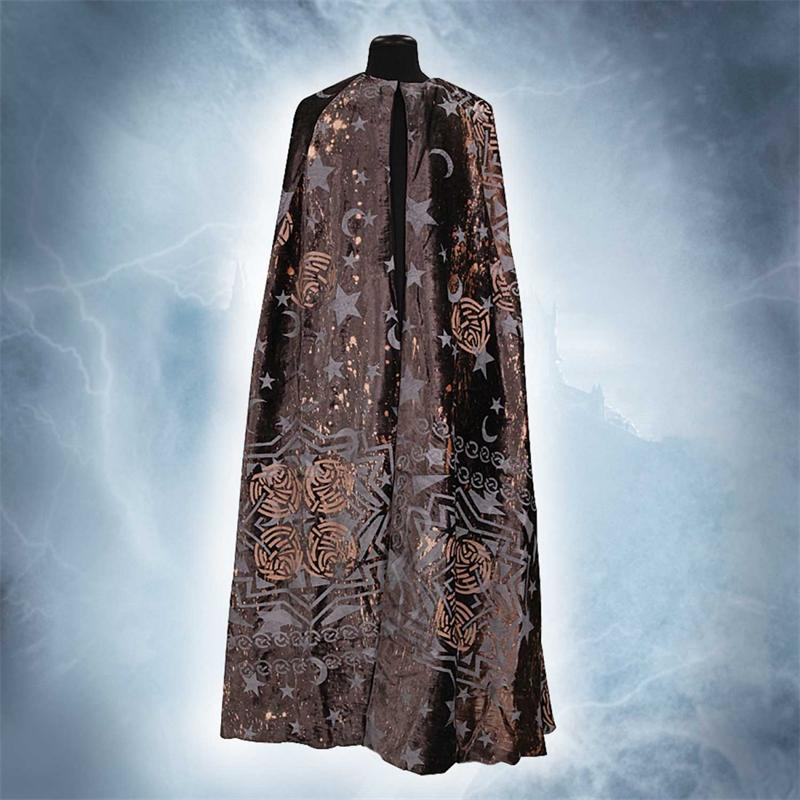

특징
착용하면 착용한 자의 몸을 투명하게 가려주는 망토. 마법사 세계에서도 아주 귀한 물건이다.
해리가 1학년 때 크리스마스 선물로 누군가에게 받았으며, 동봉 된 편지를 통해 아버지 제임스 포터가 남긴 유품이라는 것 밝혀지면서 해리가 매우 아끼는 보물이 되었다.
착용하면 착용한 자의 몸을 투명하게 가려주는 망토. 마법사 세계에서도 아주 귀한 물건이다.
해리가 1학년 때 크리스마스 선물로 누군가에게 받았으며, 동봉 된 편지를 통해 아버지 제임스 포터가 남긴 유품이라는 것 밝혀지면서 해리가 매우 아끼는 보물이 되었다.